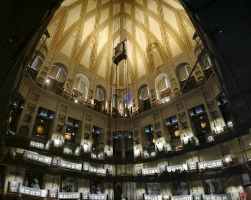
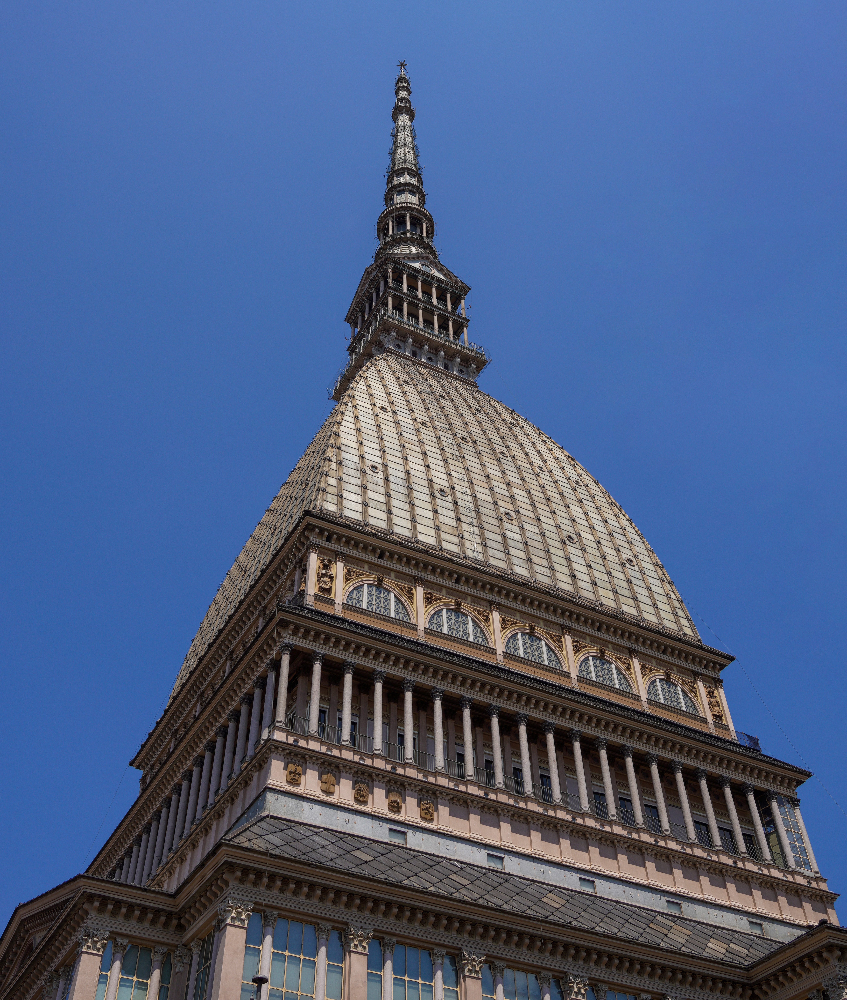
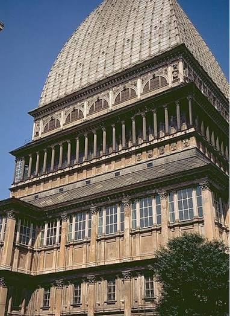

Un'Opera Ambiziosa
Progettata originariamente dall'architetto Alessandro Antonelli nel 1863 come sinagoga, la Mole è diventata nel tempo il simbolo indiscusso della città di Torino. Con i suoi 167,5 metri di altezza, è stata per anni una delle costruzioni in muratura più alte del mondo. Oggi ospita al suo interno il celebre Museo Nazionale del Cinema.
La costruzione fu tormentata: i costi eccessivi e le modifiche al progetto originale spinsero la comunità ebraica a cedere l'edificio al Comune nel 1873. Antonelli continuò a modificarne la forma fino alla sua morte, avvenuta nel 1888, poco prima del completamento dell'opera. La guglia attuale è una ricostruzione: quella originale crollò nel 1953 a causa di un violentissimo nubifragio e fu sostituita da una struttura rinforzata in acciaio.
I Numeri della Mole
167,5 m
Altezza totale compresa la guglia
1889
Anno di inaugurazione
1961
Inaugurazione dell'ascensore panoramico
Galleria Architettonica
Esplora i dettagli e le diverse prospettive del simbolo di Torino




Informazioni per la Visita
Tutto quello che c'è da sapere per organizzare al meglio la tua esperienza
Giorni e Orari
Lunedì - Domenica: 09:00 – 19:00
Martedì: Chiuso per turno settimanale
* Ultimo ingresso un'ora prima della chiusura.
Dove si trova
Indirizzo: Via Montebello, 20, 10124 Torino TO
Situata in pieno centro storico, è facilmente raggiungibile a piedi da Piazza Castello o con i mezzi pubblici (Linee 13, 15, 55, 56, 68).
I Nostri Consigli per la Visita
Prenota in Anticipo
I posti per l'ascensore panoramico sono limitati. Ti consigliamo caldamente di acquistare il biglietto online qualche giorno prima per non rimanere a terra.
Arriva Presto
Nelle ore centrali della giornata le code ai controlli di sicurezza possono allungarsi. Arrivare la mattina presto ti farà risparmiare molto tempo.
Protezione Solare
Se decidi di salire sul terrazzino panoramico della cupola in estate, sarai completamente all'aperto sotto il sole: porta con te occhiali e protezione solare!
Museo Nazionale del Cinema
Uno dei musei cinematografici più importanti al mondo
Percorso Museale
Oltre 3.000 reperti distribuiti su più livelli raccontano la storia del cinema dalle origini ad oggi. Proiezioni, installazioni interattive e rarità cinematografiche da tutto il mondo.
Acquista BigliettiAscensore Panoramico
Sali fino a 85 metri con l'ascensore panoramico in vetro e goditi una vista unica su Torino e le Alpi. Accessibile a tutti i visitatori con il biglietto del museo.
Maggiori InfoPianifica la tua Visita
Calcola il prezzo del tuo biglietto per il Museo + Ascensore Panoramico